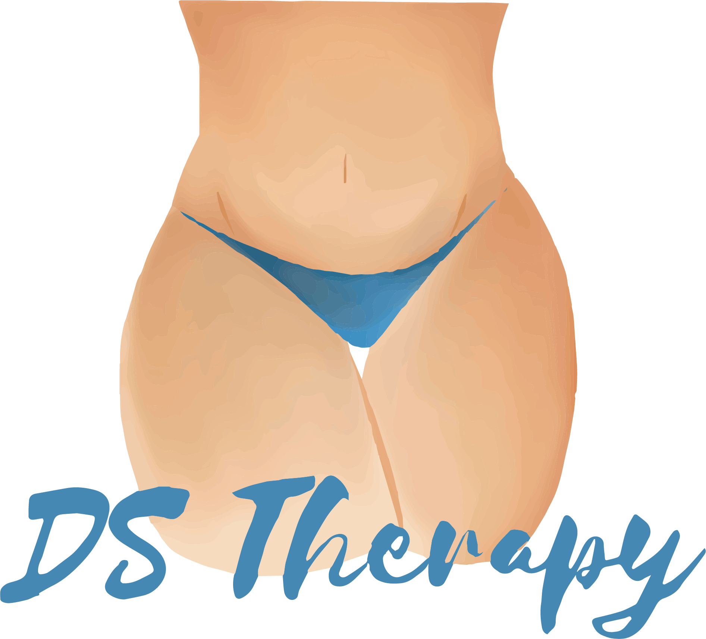

Strict contraindications to the endermologie® include:
– Cancer in progression
– Infection or skin rash
– Disease with inflammatory eruption
– Anticoagulant treatment
– Blood disease
– Organ transplants (kidney, liver, etc.)
– Kidney failure
People with hypothyroidism, diabetes, or undergoing a long-term corticosteroid treatment respond less well to our treatments. In case of doubt, please consult your general practitioner or your attending physician.
From the very first sessions, your skin is brought back to life! Your skin texture is refined and your skin more supple and radiant thanks to the reactivation of the production of collagen, elastin, and hyaluronic acid. The results then keep improving after each session. For quicker results, sessions can be scheduled several times a week at the beginning of the treatment (the fibroblast can be constantly stimulated). The first month is important to trigger the process at the skin level. After that, one session per month is enough. A beauty anti-aging lifestyle to be adopted all year round!
The best way to answer this question is with a metaphor: exercising two weeks during your summer vacation won’t keep you fit for the rest of the year, will it? The same is true for your endermologie® sessions. During the attack phase (2 sessions per week for 1 month), the goal is to send enough messages to our slimming cells to create a sustainable cellular awakening. In a few weeks, depending on your objectives, the technique will release resistant fat, smooth away cellulite, reshape curves or firm your skin. After this intensive period, it is important to regularly continue to stimulate these cells so they don’t fall back to their old, lethargic habits. The good news is that one session per month is sufficient to reactivate this cellular memory and leverage its slimming and firming effects. Just like physical exercise, endermologie® becomes a new lifestyle.
No, the treatment is very pleasant. The settings are customized depending on skin sensitivity. After the first few minutes, you can feel a “cellular awakening” and the acceleration of blood circulation. The skin is re-oxygenated and a feeling of well-being sets in. It is a unique sensory experience!
It all depends on your weight and your beauty objectives. Almost any diet can help you lose weight, but not always where you want it. Orange-peel skin and localized fat in certain areas of the body (saddlebags, buttocks or thighs) are immune to diets and exercise. To get rid of them, the endermologie® technique has proven to be particularly effective. The ideal is to associate your endermologie® program with a varied and balanced diet as well as regular physical exercise for optimal effectiveness.
Yes, endermologie® treatments stimulate circulatory exchanges to eliminate excess water while providing an immediate and lasting sensation of well-being. Over the course of your sessions, your legs become more streamlined and regain their natural shape while the overall quality of your skin improves.
During pregnancy, the only effective treatments will be the drainage of the legs as well as anti-aging facial and hand treatments. Please consult your general practitioner beforehand.
A little extra belly does not always mean excess fat. It could just be sagging skin and in this case, diets or ab exercises won’t help you. To effectively treat this area, the initial assessment is fundamental. What’s the test? Just gently pinch the skin fold. If the skin between your fingers is thin and the fold lacks substance, it’s a sagging skin problem. Other telltale signs include wrinkled skin, stretch marks or a frowning belly button. endermologie® uses specific maneuvers to stimulate the youth cells (fibroblasts) at the skin surface, making it firmer and more toned.
The endermowear™ suit is THE outfit to be worn during a Body endermologie® session. Strictly used for personal use, it guarantees perfect hygiene and its opaque areas respect your privacy during the treatment. The unique composition of the endermowear™ suit provides excellent grab of the skin fold for an even more effective endermologie® session
Some women consider liposuction as the last resort to get rid of their resistant fat. However, it has been scientifically proven that endermologie® is able to naturally release localized and resistant fat with the additional benefit of reshaping curves, eliminating cellulite and firming the skin. Painless and without any side effects, endermologie® also stands out as the solution of choice in cases where liposuction is not recommended (circulatory disorders, insufficient volume, etc.). However, if liposuction is done, it is strongly recommended to combine the two techniques to optimize results. Before the operation, the sessions prepare and soften the skin tissue to facilitate the surgery. After the operation and if recommended by your surgeon, they facilitate the resorption of edemas and hematomas and effectively improve skin quality. In any case, a comprehensive review should be carried out to determine the best approach to adopt.
VelaSmooth® is a non-invasive body contouring treatment for Skin tightening, circumferential and cellulite reduction*. VelaSmooth enables you to safely achieve a toned, contoured and well shaped body in typically 3-10 treatments,making you look and feel more youthful. VelaSmooth provides dramatic results without downtime or significant discomfort.
Cellulite treatment areas, arms, thighs, buttocks, back, flank and abdomen. Most patients see gradual and cumulative results throughout the treatment regime.
VelaSmooth is not a weight loss treatment. VelaSmooth uses a combination of technologies to contour your body, reducing the trouble spots that diet and exercise can’t reach. The ideal VelaSmooth patient is someone with a BMI (Body Mass Index) of less than 30, who falls under The Nurnberger-Muller Cellulite Classification Stage 1 and 2. Ask your doctor to see if you're a candidate for VelaSmooth treatments.
VelaSmooth Mechanism of Action VelaSmooth uses vacuum technology to manipulate your skin while infrared light (IR) and bi-polar radio frequency (RF) energies will gently heat fat cells and surrounding tissue. Over the course of your treatments, you will notice a reduction in both circumference and in the appearance of cellulite in the treated areas.
VelaSmooth technology combines infrared light, bi-polar radio frequency energy and vacuum, which cause deep heating of the fat cells, their surrounding connective tissue and the underlying dermal collagen fibers. This type of efficient heating and vacuum stimulates the growth of new and better collagen and elastin which results in localized reduction in skin laxity, body volume, and an overall improvement in skin structure and texture.
Gradual smoothing of skin's surface with a noticeable reduction in cellulite Circumferential reduction, with noticeable reshaping of the treated area and tightening.
Most patients find VelaSmooth comfortable and describe the treatment as feeling like a warm deep-tissue massage. The treatment parameters are easily adjusted to ensure a comfortable treatment experience. It is normal to experience a warm sensation for a few hours after your treatment. Some patients report a pinkish appearance at the treatment area that may last a few hours post treatment, and skin may appear pink for several hours.
1 hour • 450 DKK
LPG stimulates circulatory exchanges to fight water retention and drain toxins, relaxes areas of muscle tension, eliminates stress and brings a deep sense of relaxation. Velasmooth is an anti-cellulite, fat-burning and skin-tightening treatment that targets the problematic body areas: thighs, buttocks, stomach, waist, etc. Combining these two treatments could bring a great whole-body experience for the balance of body and mind.45 minutes • 500 DKK
Velasmooth combines Infrared and Radiofrequency (RF) energy technology with tissue mobilization and suction (pulsed vacuum). The synergy of these components ensures that depth of penetration beneath the skin layer is achieved for effective, controlled heating and claimed enhanced metabolism of fatty tissue. In fact, it is the first clinically proven medical device to penetrate deep enough into the fatty tissue to treat cellulite and non-invasively contour the body.30 minutes • 300 DKK
LPG stimulates circulatory exchanges to fight water retention and drain toxins, relaxes areas of muscle tension, eliminates stress and brings a deep sense of relaxation. Velasmooth is an anti-cellulite, fat-burning and skin-tightening treatment that targets the problematic body areas: thighs, buttocks, stomach, waist, etc. Combining these two treatments could bring a great whole-body experience for the balance of body and mind.30 minutes • 350 DKK
LPG Lipomassage is a proven approach dedicated to localized fat, cellulite and contours. The treatment is a unique, non-invasive way of shaping your body, reducing the appearance of cellulite and improving overall skin fitness. • Reduces the “dimpled” appearance of cellulite • Increases blood flow • Increases lymphatic drainage – aids fluid elimination • Tones and smooths the skin • Improves elasticity of the skin • Maximizes body contouring • Exfoliates for softer skin • Reduces muscle tension • Keeps clients motivated to maintain health and fitness • Creates a feeling of well - being1 hour • 650 DKK
LPG Lipomassage is a proven approach dedicated to localized fat, cellulite and contours. The treatment is a unique, non-invasive way of shaping your body, reducing the appearance of cellulite and improving overall skin fitness. • Reduces the “dimpled” appearance of cellulite • Increases blood flow • Increases lymphatic drainage – aids fluid elimination • Tones and smooths the skin • Improves elasticity of the skin • Maximizes body contouring • Exfoliates for softer skin • Reduces muscle tension • Keeps clients motivated to maintain health and fitness • Creates a feeling of well - being